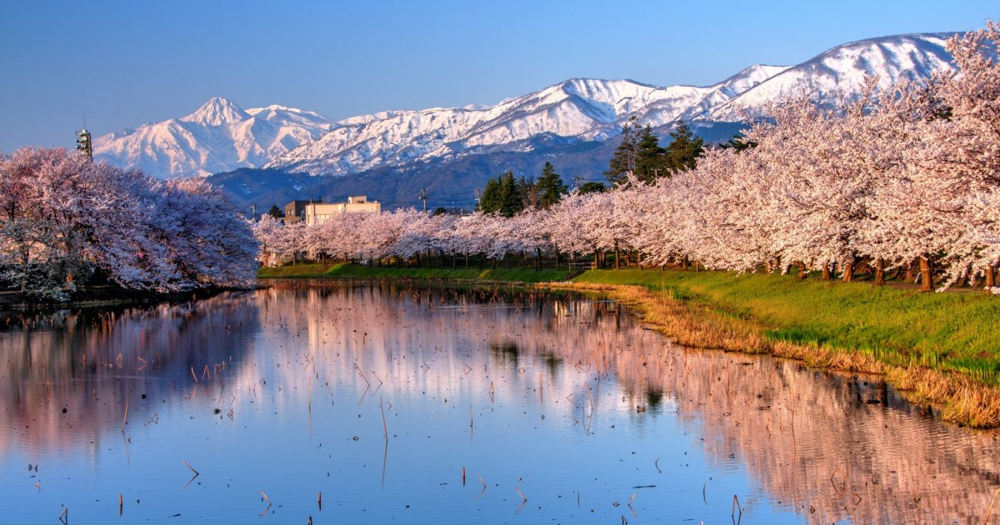

Niigata
Niigata est la capitale de la préfecture éponyme située au nord de l’île principale Honshu, sur la façade ouest du Japon. L’une des plus peuplées de la région, la ville compte environ 800.000 habitants répartis dans huit arrondissements. Elle est renommée pour sa production du riz Koshihikari, son saké et son agriculture locale.
À deux heures en Shinkansen de Tokyo, Niigata est la plus grande ville portuaire le long de la mer du Japon. À l’embouchure du fleuve Shinano (le plus long du Japon) et traversée par l’Agano, elle prospère au XIXe siècle avec ses échanges commerciaux à l’international.
L’eau s’avère un élément très présent en son sein, notamment à travers la plage et de nombreux onsen réputés. Source d’irrigation pour les rizières et autres cultures de la plaine d’Echigo, la rivière Shinano sert également de navette fluviale pour accéder à l’île de Sado située à 45 kilomètres au large.
Parmi les symboles de la ville, on admire le pont Bandai construit en 1886. Son architecture en six arches est désignée comme Bien Culturel Important du Japon depuis 2004. Niigata accueille également plusieurs musées et brasseries de saké à découvrir.
Avec un centre-ville proche de la gare, les visiteurs peuvent se déplacer aisément à pied, à vélo ou en bus pour rejoindre les quartiers historiques et touristiques Bandai et Furumachi, situés chacun sur l’une des rives du Shinano. Une partie des bâtiments traditionnels a été détruite lors d’un grave incendie en 1955. La vieille ville s’habille aujourd’hui d’immeubles modernes comprenant des centres commerciaux à la mode.
La région a été plusieurs fois touchée par des tremblements de terre, dont les plus importants en 1964 avec une magnitude 7,5 et le dernier en 2007 avec une ampleur de 6,3 sur l’échelle de Richter.
Depuis 2009, Niigata est jumelée avec la ville française de Nantes ; cela concerne notamment les échanges linguistiques avec les étudiants ainsi que le festival de musique classique "La Folle Journée", qui exporte une édition japonaise chaque printemps.